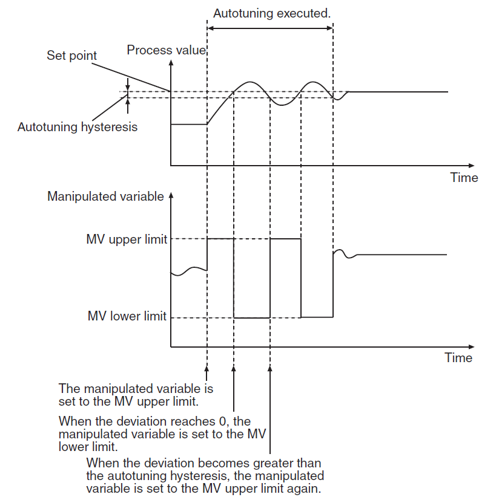
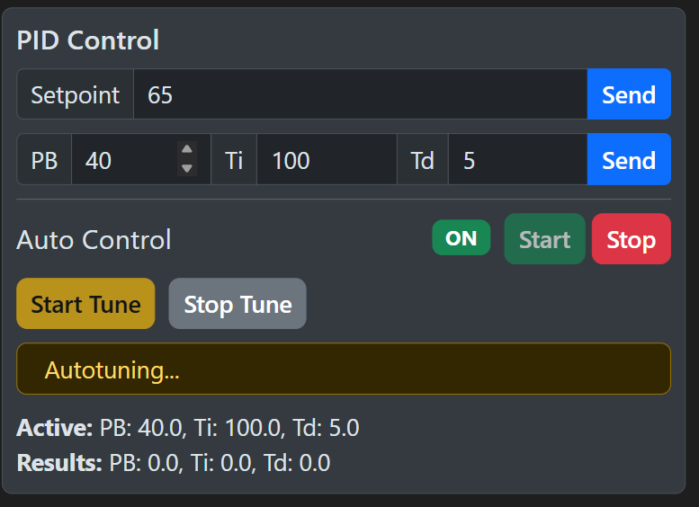
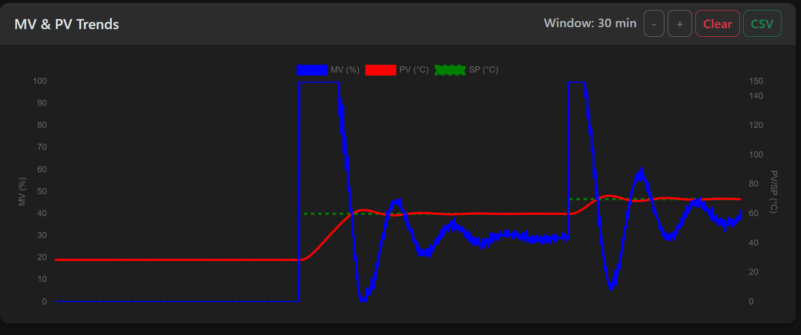

Lab 5: PID Tuning - Autotuning and Fine-Tuning Method
1. Objective
The goal of this lab is to implement the Omron NJ301 Autotuning (AT) function to automatically determine PID parameters and then evaluate the system's performance during a larger temperature step change. Students will compare these "machine-calculated" values with their previous manual calculations from Lab 4.
2. Background
2.1 How Autotuning Works (The Limit Cycle Method)
Industrial controllers like the Omron NJ301 use a technique called the Limit Cycle Method for autotuning. Instead of relying on manual calculations, the controller "tests" the system by forcing the temperature to oscillate.
When you click Start Tune, the controller follows this logic:
Forcing a Response: If your Setpoint (SP) is higher than the current Temperature (PV), the controller immediately sets the power (MV) to 100%.
The Turning Point: Once the temperature reaches the setpoint, the controller switches the power to 0%.
The Cycle: As the temperature drops back down below the setpoint (after a small buffer called hysteresis), the controller turns the power back to 100%.
Calculation: The controller repeats this cycle twice. By measuring the time between these peaks and the size of the temperature waves, it can mathematically determine the perfect PID constants for your specific setup.

2.2 Why we stabilize at 60°C first?
Autotuning requires a clear "starting line." By stabilizing at 60°C and then moving the Setpoint to 65°C before clicking Start Tune, we ensure two things:
The system is in a known, steady state.
There is a sufficient error (the 5°C difference) for the controller to begin the 100% power "push" required for the Limit Cycle Method.
3. Measurement Tasks
3.1 Powering Up and Initialization
Process Power: Click Start in the Process Power section.
Verify Status: Ensure Gateway, Camera, and ESP32 are all ALIVE.
Web Control: Click Start to enable communication with the PLC.
3.2 System Setup (Using Lab 4 Parameters)
Mode: Switch the system to Tune Mode.
Initial Values: Input your final $PB$, $T_i$, and $T_d$ values calculated from Lab 4 and click Send.
Base Stabilization: Set the Setpoint (SP) to 60°C and click Start. Wait until the temperature is completely stable.
3.3 The Autotuning Process
Prepare for Tune: Increase the Setpoint (SP) to 65°C.
Activate AT: Click the Start Tune button on the dashboard.
The system will enter a specialized tuning mode.
Observe the "Autotuning..." status message on the dashboard.

Wait for Completion: Do not change any settings while the tune is active.
Note: If you need to cancel the process, click Stop Tune. The tuning process will stop, and the controller will return to its previous feedback control state.
The process is complete when the "Tune Complete" alert appears and the status resets.
Review Results: Once complete, the controller will automatically stop the oscillation and output the final Results (PB, Ti, Td).
Important: You must manually enter these new values into the dashboard PID fields and click Send to update the controller.
Action: Note these values down manually for your report.
Note: You do not need to download a CSV file for the autotuning oscillation phase.
3.4 Implementation and Performance Verification
Update Controller: Input the autotuned $PB$, $T_i$, and $T_d$ results into the PID input fields on the dashboard.
Apply: Click Send to transmit these new values to the PLC.
Reset Temperature: Set the Setpoint (SP) back to 60°C and click Start. Wait for full stabilization.
The Stress Test: Once stable at 60°C, change the Setpoint (SP) to 70°C and click Start.

Data Capture: Observe the transient response on the chart.
Export: Once the temperature has stabilized at 70°C, click CSV to download the data for your report.
4. Post-Laboratory Task
4.1 Response Comparison
Plotting: Create a chart showing the transition from 60°C to 70°C using the autotuned parameters.
Metric Analysis: Calculate the following for the 70°C step:
Overshoot (%)
Rise Time (s)
Settling Time (s)
Discussion:
Comparison: Compare these metrics with your Lab 4 results. You may notice that both ZN (manual) and Autotune (automated) often produce aggressive responses with some overshoot.
Performance: Which method reached the setpoint faster (Rise Time)? Which one reached stability sooner (Settling Time)?
Reducing Overshoot: If the overshoot observed in this experiment is too high for a sensitive industrial process, how would you manually adjust the $PB$ and $T_i$ parameters to achieve a smoother response?